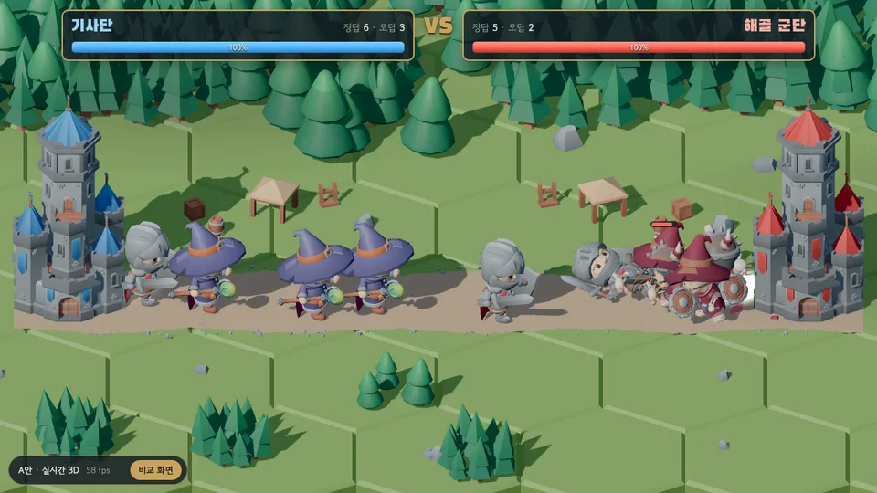
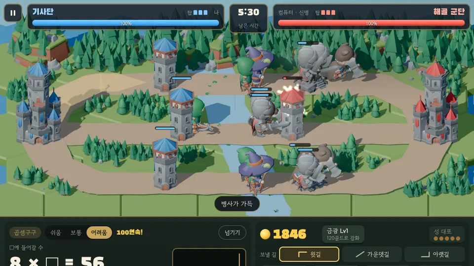
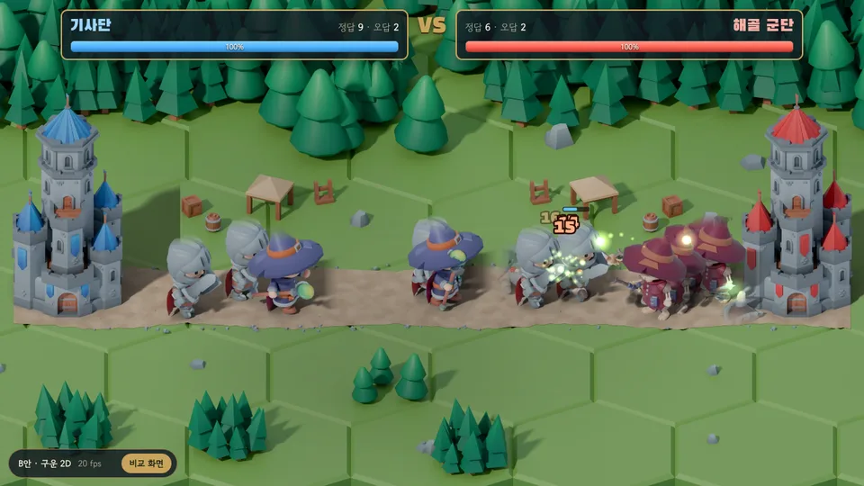

A안 · 실시간 3D
처음 받는 양 약 10MB브라우저가 3D 모형을 매 순간 직접 그립니다. 그림자가 실시간으로 움직이고, 나중에 카메라를 돌리거나 확대할 수 있습니다.
- 좋은 점
- 동작이 부드럽게 이어짐, 카메라 자유
- 걱정
- 병사가 많아지면 느린 태블릿이 버거울 수 있음
문제를 맞히면 병사가 출전해 상대 성을 무너뜨리는 대전 게임의 그림만 먼저 만들었습니다. 지금은 컴퓨터가 양쪽 학생 대신 정답을 냅니다. 같은 무료 3D 모형을 두 가지 방법으로 그렸으니, 눈으로 보고 태블릿에서 부드러운지 비교해 주세요. 게임 이름은 임시입니다.

새로 · 1단계 시험판 · 3갈래 지도 2가지 연습 대전 해 보기 윗길·가운뎃길·아랫길 3갈래, 길마다 탑이 한쪽에 하나씩 있습니다. 계산 문제를 풀어 골드를 벌고, 보낼 길을 고른 뒤 병사 4종(상성)을 출전시켜 컴퓨터(신병·기사·장군)의 본성을 무너뜨리세요. 지도는 두 가지로 비교해 보실 수 있습니다(시작 화면에서도 바꿀 수 있음). 대각선 지도펼친 3갈래
브라우저가 3D 모형을 매 순간 직접 그립니다. 그림자가 실시간으로 움직이고, 나중에 카메라를 돌리거나 확대할 수 있습니다.

블렌더에서 고급 조명으로 미리 그려 둔 그림(배경·성·병사 동작)을 2D로 띄웁니다. 그림자와 빛이 그림에 구워져 있습니다.